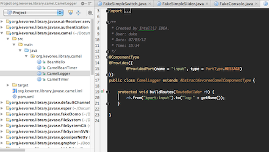
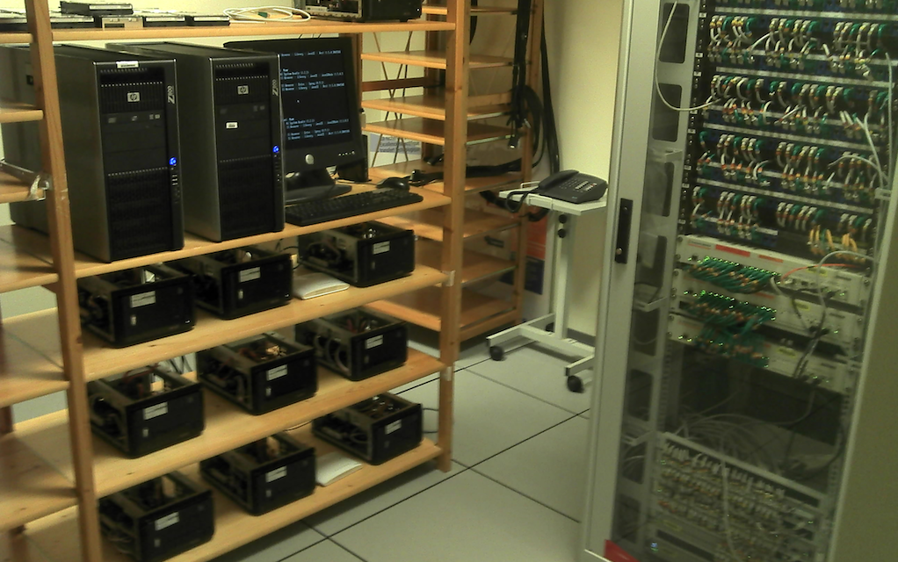

Comparch'2014: Distributed Models@Run.time : Kevoree Project by François Fouquet (SnT Luxembourg) , Olivier Barais and Noel Plouzeau(IRISA Rennes)
Olivier Barais : Maître de conférences ISTIC University of Rennes 1 Noel Plouzeau : Maître de conférences ISTIC University of Rennes 1
(practice 0) (practice 1) (practice 2) (practice 3) (practice 4) (practice 5)
A software system design is...
Modular conception
(Dijkstra'74 )
Splitted by fonctionality
Module
System
assembly of modules
Modules communicates through services, messages brokers...
From V cycles to continuous design...
System A
System A'
System A
System A'
V Cycle : application based deployement Continous : modules based deplpyement granularity (Crnkovic'07)
module
evolution some modules
Adaptation
Reasoning about adaptations needs a
context
Adaptation loop
M onitoring
A nalyze
P lan
E xecution (
IBM'03 )
(2/2)
Not limited to
*specific* devices !
(OSGi consortium)
(ex: change pooling period)
Performance and Redundancy
Grid and Cloud computing
, ...
Physical suitability
Sensors and embedded nodes
Adaptation and distribution
adaptation loop
Remote adaptation current state
reliable software engineering
adaptable software systems?How to safely manage distributed adaptive systems?
How to deal with heterogeneous nodes?
Complex Systems 4
i need v need
Heterogeneous dissemination strategy
Known and fix area: Highly consistent reflexion layer
Unknown and mobile area: weak consistent reflexion layer
Imposed diversity depending on the business:
limited
battery, ...
Architectural abstraction needed !
> Distributed Models@Runtime
A model as an abstraction during execution, reflects the system
Model modification without effect on platform
On demand *causal link*
Target model becomes current model after synchronization
Distributed reflection leveraging models
has a Model@Runtime layer
Reflexive interaction through models
Only local interactions (through models)
After modification, propagation via distribution of the model
Delegation : Node responsible of local causal link
Distributed Model@Runtime
global model replica
per node,
local causal link
DDAS synchronization
(strong, eventual,...)
Evolution =
Break: Real world sample and demo
On update
Concrete implementation of Distributed Models@RuntimeEnvironment of
Development and
Execution
Component-Based and highly
Distributed Software Systems
Leverages
Model Driven Engineering
(through KMF)
Framework to build your own Dynamic Distributed System...
Model@Runtime for DDAS
MDE@Runtime
Architecture model shared across distributed nodes
Offline & online operation, compute@Model, apply @Runtime
Component-based
Communication semantics between components in channels
Continuous Design (Hot (re-)deploy & provisioning)
Heterogeneity management with NodeType
What is a software component ?(1/2)
Independent & Self-Contained piece of SoftwareConforms to a Component ModelDeployment unit Functional unit Provides / Requires Services (defined by a set of methods)Life-cycle based elements
Goals : Abstraction, Seperation of concerns, Reuse
What is a component made of?
CBSE and Model@Run.time
Based on a *component* model and software industry best practices
Framework : Code and Model (continuous design)
High level *DSL* to write distributed system adaptations
Main concepts
Component
Encapsulates domain features
Channel
Encapsulates communication semantics
Group
Encapsulates model@runtime dissemination semantics
Node
Encapsulates adaptation semantics
Type/Instance based design
Goal
TypeDefinition
What are available fonctionalities?
HttpServeur
DeployUnit
Dependency graph (technical units)
Instance
Where is a fonctionality in use
Server_4 : HttpServeur
Graphical language
Explicit topology, components, channels,...
Nodes : execution platform
Components : fonctional units
Communications via via ports
Channels : communication semantics
encapsule les diffusions complexes (N-N)
NodeType and Node : runtime mapping
NodeType used to declare deploy target
JavaNode
AndroidNode
DockerCloudNode
LXCCloudNode
Arduino
[...]
Component : closed part of a system, has responsibility
Ports are the borders of components
Required and Provided Ports
Close isolation = CA cannot directly call any method of CB
Dynamic Parameters
Communications are supported by Channels (C1)
Channel Type
Extract communication semantics from component Explicit complex distribution scenario Model communication semantics
Instance fragmentation and concurrency
Component
Actor semantic on each port, channel
Instances are isolated in dedicated process
Channel (aka connector)
Fragmented on each linked node
Actor semantic on each fragments
Local diffusion responsability
Framework and runtime for Java, JS and C++
Tutorial rely on Java version
Annotation framework, Editor, IDE and Compilers Plugins...
Childs projects:
Kevoree Modeling Framework : http://kevoree.org/kmfPolymer : http://kevoree.org/polymerKevoree Dynamic ClassLoader
Kevoree, Model@Run.time and Distribution
Kevoree Tools
Desktop Model Editor
Online Model Editor
KevScript
Java Annotations API
Maven Compiler Plugin
Watchdog OS integration
IDE Plugin (Eclipse, IntelliJ)
Why Kevoree Ports are asynchronous ?
KevScript: DSL for dynamic architecture
IntelliJ developement environement
Eclipse developement environement
Kevoree Platforms
JavaNode (root)
LightLXC (Linux Container)
JavaScript (NodeJS, Browser)
Docker Kevoree
Boot2Kevoree !

Environment Setup 1/3
You need
Java Development Kit >= 1.6
Maven >= 3.0.4
a pre-load Maven repository
One Java IDE (eclipse, intelliJ, netbeans)
The latest Kevoree editor
The latest Java runtime container
We provide everything on an usb stick for (several OS and architectures)
A simple distributed chat application
First application
Start the editor and a Java container
> java -jar editor.jar && java -jar platform-gui.jar
Load the model of the container
File -> Open from node (localhost:9000)
Import Java toy and channel library
Model -> Load Kevoree Library -> Java -> Channel/Toy
Create a first model
2 ToyConsoles bound through an AsyncBroadCast channel
First distributed application
Start a second Java container
> java -Dnode.name=node1 -Dnode.bootstrap=node1.kevs -jar platform.jar
Merge the model of the container
File -> Merge from node (localhost:9001)
Import Java toy and HazelCast library
Model -> Load Kevoree Library -> Java -> HazelCast/Toy
Update your first model
2 ToyConsoles bound through a DistributedBroadCast
> Let's try it:
Develop with Kevoree: From Source Code to Deployment
KevoreeFramework, Java Annotation API
Plain Old Java Class approach ...
Declare Type contract as header of Java Class
@ComponentType, @ComponentFragment, @ChannelType, [...]
Declare life-cycle method on simple void method
@Start, @Stop, @Update (dictionary update)
@Library to group Type definition
@ComponentType
@Library(name = "Java - Samples")
public class HelloProducerComponent implements HelloProductionListener {
@Output
private org.kevoree.api.Port helloProducedPort;
@Param(defaultValue = "2000")
private int delay = 2000;
@Start
public void startComponent() {...}
@Stop
public void stopComponent() {...}
@Update
public void updateComponent() {...}
KevoreeFramework, Java Annotation API
ComponentType == Java Class
@ComponentType or @ComponentFragment
@Input & @Output & @Param to declare component type contract
@ComponentType
@Library(name = "Java - Samples")
public class XXX {
@Param(defaultValue = "2000")
private int delay = 2000;
@Input
public void consumeHello(Object o) {...}
//Without callback
@Output
private org.kevoree.api.Port helloProducedPort;
public void onHelloProduced(String greetingMessage) {
helloProduced.call(greetingMessage);
}
//With callback
@Output
private org.kevoree.api.Port userDecision;
public boolean askUser(String questionMessage) {
userDecision(greetingMessage, new Callback() {
public void run(Object result) {
return (Boolean)result;
}
});
}
KevoreeFramework, Java Annotation API
Several services from the Kevoree runtime can be injected into a component
@KevoreeInject on a variable typed by the service you need
ModelService
BootstrapService
KevScriptService
Context
ChannelContext
@KevoreeInject
ChannelContext channelContext;
KevoreeFramework, Java Annotation API
ChannelType (@ChannelTypeFragment)
Input bindings use dispatch method
forward primitive to forward message
local bindings
other fragments
@ChannelType
public class SyncBroadcast implements ChannelDispatch {
@KevoreeInject
ChannelContext channelContext;
@Override
public void dispatch(Object payload, Callback callback) {
for (Port p : channelContext.getLocalPorts()) {
p.call(payload, callback);
}
}
}
> Let's try it:
Model@Runtime, Runtime Adaptation
Kevoree metamodel
Kevoree Modeling Framework
Metamodel
generate lightweight object structure with concise API for manipulating models in Javascript, Kotlin, Java, Scala, C+++
generate helpers: XMI/JSON loader, XMI/JSON serializer, cloner, diff operator, merger ...
Manipulating the model
M@R: Read the model
int instancesNumber = localModel.
getComponentInstanceForJ().size();
for(ComponentInstance inst :
localModel.getComponentInstanceForJ()) {
System.out.println(inst.getName()+ ":"
+ inst.getType.getName);
}
M@R: Adapt the model (the hard way)
@KevoreeInject
ModelService modelService;
@KevoreeInject
Context context;
@KevoreeInject
KevScriptService kevScriptService;
@Override
public void run() {
try {
Log.info("i'm alone... kill myself...");
ModelCloner cloner = new DefaultModelCloner();
ContainerRoot clonedModel = cloner.
clone(modelService.getCurrentModel().getModel());
kevScriptService.execute("remove " +
context.getNodeName() + "." +
context.getInstanceName(), clonedModel);
modelService.update(clonedModel, null);
} catch (Exception e) {
e.printStackTrace();
}
}
M@R: Adapt the model (the easiest way)
Create a KevScript:
add node0.comp2 : ToyConsole
Ask the kevScriptService of the platform to execute the script
KevoreeFramework, KevScript
Scripting language to manipulate models
Comments -> // this is a comment
Namespace -> namespace space42
Repository -> repo org.sonatype.org/foo/bar?a=b&c=d
Include -> include mvn:org.kevoree.library.java:org.kevoree.library.java.javaNode:3.0.0
add -> add node0, node1 : JavaNode
KevoreeFramework, KevScript
Scripting language to manipulate models
remove -> remove node0
move -> move node0.comp0 node1
set -> set node0.comp0.foo = "bar"
bind/unbind -> (un)bind node0.base.output chan0
(de)attach -> (de)attach node0 sync
network -> network node0 192.168.0.1
> Your turn
Create a green component that removes itself if it does not receive any input message
> Let's try it:
Kevoree for cloud management
Managing cloud level with Kevoree node
Kevoree node is a container of components but also of nodes !
A parent node is responsible for child's nodes life cycle (start/stop)
NodeType refines adaptation strategies
See the Cloud as a hierarchy
IaaS and PaaS nodes
Add/Remove node capability
Available NodeType
MiniCloud : (Add/Remove Java Virtual Machine)
FreeBSD Jails: (Add/Remove VM in the same kernel space)
SmartOS Zone: (same as Jail)
KVM: Hypervisor management
Amazon EC2: Add/Remove EC2 Virtual Machine
KevScript as a cloud modeling language
KevoreeScript abstracts model manipulation
IaaS adaptation
//add IaaSPlatform
addNode iaasKVM21 : KVMNode {ip="10.0.1.5"}
//add two user node
addNode userNode1 : JavaNode
addNode userNode2 : UbuntuNode {version="12.04"}
//attach to IaaSNode42
addChild userNode1,userNode2@iaasKVM21
PaaS adaptation
addNode worker2@IaaSNode44 : JavaNode {cpufreq="800mhz",arch="32bits",ram="2gb"}
addNode worker3@IaaSNode44 : JavaNode {cpufreq="800mhz",arch="32bits",ram="2gb"}
moveComponent *@worker1 => worker2
removeNode worker1@IaaSNode42
MiniKloud Model@Runtime driven platform (@Rennes - Brittany)

> Your turnCreate a component that dynamically reallocates WebServers within a cloud
> Let's try it:
Kevoree in the small
Devices diversity
New mobility usages boost low consumption computer development
FPGA, Softproc (VHDL)
Micro-controller (uC, C code)
System on chip (SoC)
Smartphones (android, Java)
Low consumption Cloud VM based on ARM
Challenges of adaptation on μC
μC nodes not powerful enough to support all adaptation strategies!
Dynamic adaptation on μC faces several challenges
For comfort and critical uses, downtime must be minimal
Volatile memory usage must fit in few kB
Persistent memory writes are limited
Reconfiguration must be statefull, to recover from power failure
μKev Component model
Type definition/instance (what/where)
Component with ports (in/out) and parameters
Communication channels between ports (bindings)
Write code (C/Processing/Java) =>
Instantiate in a model
@ComponentType
public class TempSensor
extends AbstractPeriodicArduinoComponent {
//behavior code
@Param
int pin;
@output
Temp temp;
}
Generate firmware for types + KevScript for instances
Behind the scene
Asynchronous message passing
FIFO on front of each ports (Actor semantics)
No OS == no multi-threading
Opportunistic scheduler driven by
FIFO pending message number
Periodic execution subscriptions
0
Transactional KevScript interpreter
Generated flat reflexive layer for dynamic instantiations
Token ring dynamic memory allocation
Kevoree in a nutshell, if you got lost...R
Kevoree Ü
Model@Runtime eases the management of distributed systems P
Homogeneous adaptation for heterogeneous CPS devices
Large scale adaptation dissemination (Gossip, Paxos, etc.)
Ready for cloud and elasticity algorithms development k
Open source U
Still lost, >=M www.kevoree.org
reactions ? How to ? Like a sticky polymer...
http://kevoree.org/kmf/
http://kevoree.org/kmf/
KMF foundationModels allow navigation accross elements
versions of elements!Enabling virtual timed context models
BigData for Models
http://kevoree.org/kmf/
Efficiency
Lazy Cloning
Events
No Dependencies
Persistency
Native Mechanisms Time-related data
Reactive security for SmartGrid For instance : reduce the max acceptance level of meters We apply this modeling techniques to explore context in SmartHubs
Preliminary result on fake reasoning engine, 1 Million SmartMeters:
Polymer foundationTry to solve M@R multi-objectives Evolutionary algorithms Hyper-heuristics to fit runtime executions
Learn and reproduce it, when objectives issues
Artifical mutation concept for MOEA
Polymer is a transverval frameworkApplication on CREOS reasoning engine (greedy/fullsearch)
CLOUD computing elasticity (genetic) Application on POST SmartHome reasoning engine (greedy/genetic)
Open source and public now ! http://kevoree.org/polymer
engine = new GeneticEngine<Cloud>();
engine.setAlgorithm(GeneticAlgorithm.EpsilonCrowdingNSGII);
engine.addOperator(new AddNodeMutator());
engine.addOperator(new RemoveNodeMutator());
engine.addOperator(new AddSoftwareMutator());
engine.addFitnessFuntion(new CloudCostFitness());
engine.addFitnessFuntion(new CloudLatencyFitness());
engine.setMutationSelectionStrategy(MutationSelectionStrategy.SPUTNIK_ELITIST);
engine.setMaxGeneration(300);
engine.run();
Pandemic system synchronization (Kevoree/Thesis) Artifical mutation for problem solving (Polymer) Generational crossover hyper-heuristic (Polymer) Diversity for resiliance (Polymer - w Brittany) Scary man escape security (Kevoree/Cloud) Self-healing polymer (Kevoree SmartHome/Grid/Cloud) Time relativity in model navigation (KMF/SmartGrid)
Kevoree.org for community
The Kevoree project outputs
Initial implementation for Java (Java, Scala, KotLin) (2010,2011)
(2012) (firefighters tactical decision system (DAIS'12) Management of embedded IoT nodes (C, Arduino, AVR 8bits) (CBSE'12)
(2012-2013) (2012-2013) Web Javascript runtime (2013)
MODELS'14 - A Native Versioning Concept to Support Historized Models at RuntimeSEKE'14 - Reasoning at Runtime using time-distorted Contexts: A Models@run.time based ApproachSAC'14 - Generic Cloud Platform Multi-objective Optimization Leveraging Models@run.timeD. El Kateb, F. Fouquet, G. Nain, J. Augusto Meira, Y. Le Traon, M. Ackerman
SGSec'14 - Reactive Security for Smart Grids using Models@run.time-Based Simulation and ReasoningT. Hartmann, F. Fouquet, J. Klein, G. Nain and Y. Le Traon
WICSA'14 - Scapegoat: an Adaptive monitoring framework for Component-based systemsI. Gonzalez-Herrera, E. Daubert, J. Bourcier, W. Rudametkin, O. Barais, F. Fouquet and J-M Jézéquel
Tutorial CompArch'14,Middleware'13 - Designing and Evolving Distributed Architecture using Kevoree
Kevoree is open source kevoree.org .
Other References
Fouquet, Francois and Daubert, Erwan and Plouzeau, Noel and Barais, Olivier and Bourcier, Johann and
Jezequel, Jean-Marc -- Dissemination of reconfiguration policies on mesh networks
F. Fouquet, O. Barais, N. Plouzeau, J-M. Jézéquel, B. Morin and F. Fleurey. -- A Dynamic Component Model for
Cyber Physical Systems. -- In CBSE: 15th International ACM SIGSOFT Symposium on Component Based Software
Engineering. Bertinoro, Italy, June 2012.
E. Daubert, F. Fouquet, O. Barais, G. Nain, G. Sunyé, J-M. Jézéquel, J-L. Pazat and B. Morin. -- A
models@runtime framework for designing and managing Service-Based Applications. -- In ICSE Workshop on
European Sofware Services and Systems Research - Research and Challenges (S-Cube). Zurich, Switzerland, May
2012.
Nain, Grégory , Fouquet, François , Morin, Brice , Barais, Olivier and
Jézéquel, Jean-Marc (2010) Integrating IoT and IoS with a Component-Based approach. In Procedings of
the 36th EUROMICRO Conference on Software Engineering and Advanced Applications (SEAA 2010). Lille,
France.
André, Francoise, Daubert, Erwan , Nain Grégory , Morin, Brice and Barais,
Olivier (2010) F4Plan: An Approach to build Efficient Adaptation Plans. In MobiQuitous.
Brice Morin, Olivier Barais, Grégory Nain, Jean-Marc Jézéquel: Taming
Dynamically Adaptive Systems using models and aspects. ICSE 2009: 122-132
Brice Morin, Olivier Barais, Jean-Marc Jézéquel, Franck Fleurey, Arnor
Solberg:s Models@Run.time to Support Dynamic Adaptation. IEEE Computer 42(10): 44-51 (2009)
Kevoree Consortium and projects
Kevoree project


{kind=link}